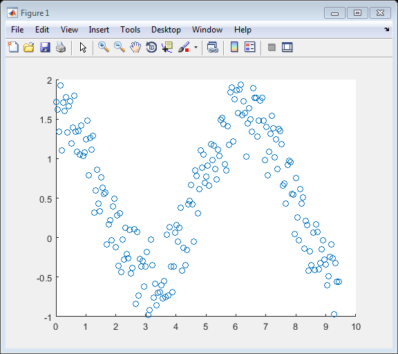
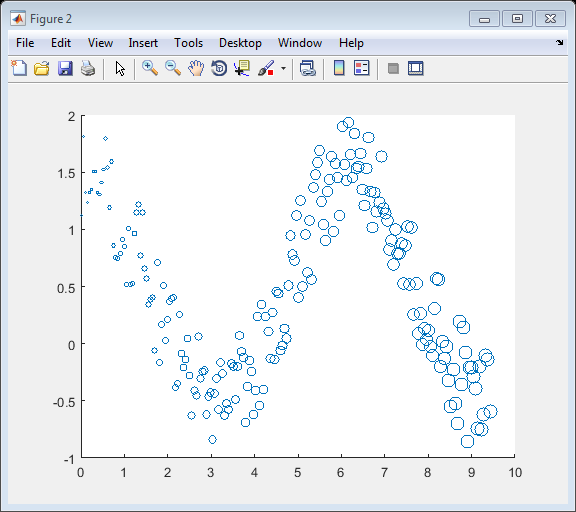
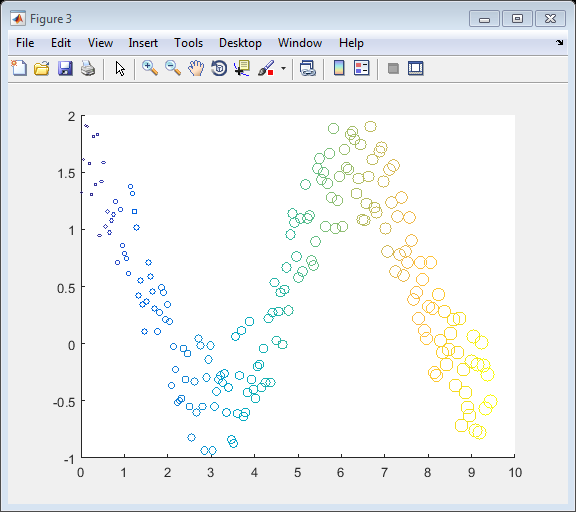
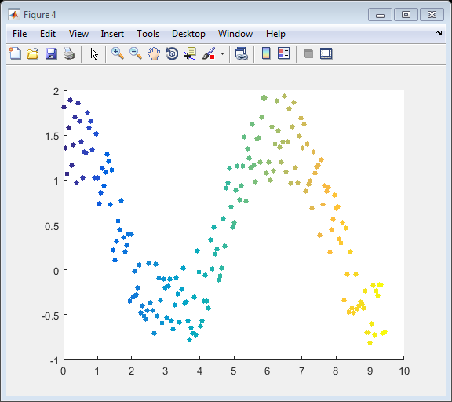
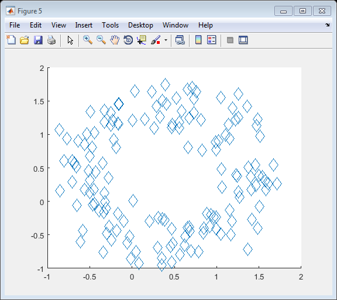

thingSpeakScatter
Create scatter plot
Contents
Syntax
thingSpeakScatter(X,Y)
thingSpeakScatter(X,Y,S)
thingSpeakScatter(X,Y,S,C)
thingSpeakScatter(X,Y,S,'filled')
thingSpeakScatter(X,Y,S,C,'filled')
thingSpeakScatter(X,Y,S,C,Name,Value)
Description
thingSpeakScatter(X,Y) displays a scatter chart with data value markers in the default size and color.
thingSpeakScatter(X,Y,S) displays circles at the locations specified by the vectors X and Y, where X and Y are of the same size and S determines the area of each marker.
thingSpeakScatter(X,Y,S,C) additionally specifies the the colors of the markers.
thingSpeakScatter(X,Y,S,'filled') or thingSpeakScatter(X,Y,S,C,'filled') fills the markers.
thingSpeakScatter(X,Y,S,C,Name,Value) additionally specifies optional Name,Value argument pairs.
Examples
Create Scatter Plot
Create a scatter plot with points of equal size.
x = linspace(0,3*pi,200); y = cos(x) + rand(1,200); thingSpeakScatter(x,y)
Varying Size Scatter Plot
Create a scatter plot with points of specific, varying sizes. Create 200 evenly spaced points with areas [1,100].
x = linspace(0,3*pi,200); y = cos(x) + rand(1,200); s = linspace(1,100,200); thingSpeakScatter(x,y,s)
Varying Color Scatter Plot
Create a scatter plot with points of varying Colors, mapped to the current colormap. Use default area markers.
x = linspace(0,3*pi,200); y = cos(x) + rand(1,200); s = linspace(1,100,200); c = linspace(1,10,length(x)); thingSpeakScatter(x,y,s,c)
Filled Scatter Plot
Create a scatter plot with filled points of varying colors, mapped to the current colormap with an equal area of 25.
x = linspace(0,3*pi,200);
y = cos(x) + rand(1,200);
s = 25;
c = linspace(1,10,length(x));
thingSpeakScatter(x,y,s,c,'filled')
 Scatter Plot with Diamond Markers
Create a scatter plot with diamond marker points with an equal area of 140.
theta = linspace(0,2*pi,150);
x = sin(theta) + 0.75*rand(1,150);
y = cos(theta) + 0.75*rand(1,150);
s = 140;
thingSpeakScatter(x,y,s,'d')
 Input Arguments
X - X values, specified as a scalar, a vector, or a matrix. X can be a numeric array, logical array, or datetime array.
Y - Y values, specified as a scalar, a vector, or a matrix. Y can be a numeric array, or logical array.
S - Marker are specified in one of these forms:
- Numeric scalar — Plot all markers with equal area.
- Row or column vector — Use different areas for each marker. Corresponding elements in X, Y, and a determine the location and area of each marker. The length of a must equal the length of X and Y.
- [] — Use the default area of 36 points squared.
C - Marker color, specified as one of these values:
- RGB triplet or a color string — Specify a custom color used for all markers.
- Vector — Use different colors for each marker and linearly map values in C to the colors in the current color map. The length of C must equal the length of X and Y. To change the color map for the axes, use the colormap function.
If you have three points in the scatter plot and want the colors to be indexed into the color map, specify C as a three-element column vector.
An RGB triplet is a three-element row vector whose elements specify the intensities of the red, green, and blue components of the color. The intensities must be in the range [0,1], for example, [0.4 0.6 0.7]. This table lists RGB triplet values that have equivalent color strings.
Long Name |
Short Name |
RGB Triplet |
'yellow' |
'y' |
[1 1 0] |
'magenta' |
'm' |
[1 0 1] |
'cyan' |
'c' |
[0 1 1] |
'red' |
'r' |
[1 0 0] |
'green' |
'g' |
[0 1 0] |
'blue' |
'b' |
[0 0 1] |
'white' |
'w' |
[1 1 1] |
'black' |
'k' |
[0 0 0] |
Example: thingSpeakScatter(x,y,36,'blue');
Example: thingSpeakScatter(x,y,36,[0 0 1]);
filled - Fill marker area, specified as 'filled' to create a plot with a filled marker.
Name-Value Pair Arguments
Specify optional comma-separated pairs of Name,Value arguments. Name is the argument name and Value is the corresponding value. Name must appear inside single quotes (' '). You can specify several name and value pair arguments in any order as Name1,Value1,...,NameN,ValueN.
'Marker' |
Marker symbol, specified as a string listed in the table.
Example: thingSpeakScatter(x,y,'Marker','s'); |
||||||||||||||
'YLabel' |
Y-axis label, specified as a string. Example: thingSpeakScatter(1:10,1:10,'YLabel','Y-Axis'); |
||||||||||||||
'Xlabel' |
X-axis label, specified as a string. Example: thingSpeakScatter((1:10,1:10,'XLabel','X-Axis'); |
||||||||||||||
'Title' |
Title of plot, specified as a string. Example: thingSpeakScatter(1:10,1:10,'Title','Plot Title'); |
||||||||||||||
'Grid' |
Plot grid, specified as a string input turning the grid 'on' or 'off'. Example: thingSpeakPlot(x,y,'Grid','on'); |
||||||||||||||
'XGrid' |
Specify if your plot has a grid only on the X axis. Set the value to 'on' to display an X axis grid. |
||||||||||||||
'YGrid' |
Specify if your plot has a grid only on the Y axis. Set the value to 'on' to display a Y axis grid. |
See Also
thingSpeakArea | thingSpeakPlotYY | thingSpeakRead | thingSpeakPlot | thingSpeakStem | thingSpeakWrite | urlFilter